<title>Our Purpose Ideas</title>
<meta name="claude:viewport-fit-sides" content="cover">
<link rel="preconnect" href="https://fonts.googleapis.com">
<link rel="preconnect" href="https://fonts.gstatic.com" crossorigin>
<link rel="stylesheet" href="https://fonts.googleapis.com/css2?family=Ysabeau+Office:wght@400;500;600&display=swap">
<style>
  /* Layout: one column like a scroll. First the part as it is today (the dark oak) and why it
     reads scary, then three ideas for the About page's "Our purpose" part, each a card with the
     real page (big screen beside phone), its score and what still holds it back. The site's own
     paper and ink, one gold for the recommendation. */
  :root {
    --paper: #f4f0e6;
    --card: #faf7f0;
    --ink: #171512;
    --ink-soft: #5d574d;
    --rule: #d9d2c1;
    --gold: #7a5a14;
    --gold-bg: #f1e4c4;
    --ask: #1f3d2b;
    --ask-bg: #e3ebdf;
    --title: "Ysabeau Office", "Iowan Old Style", Georgia, serif;
    --body: system-ui, -apple-system, "Segoe UI", Roboto, sans-serif;
  }
  @media (prefers-color-scheme: dark) {
    :root:not([data-theme="light"]) {
      --paper: #1b1915;
      --card: #24211c;
      --ink: #f1ece0;
      --ink-soft: #b6ae9e;
      --rule: #3a362e;
      --gold: #f0d39a;
      --gold-bg: #3d3220;
      --ask: #cfe3c6;
      --ask-bg: #2b3a2c;
      color-scheme: dark;
    }
  }
  :root[data-theme="dark"] {
    --paper: #1b1915;
    --card: #24211c;
    --ink: #f1ece0;
    --ink-soft: #b6ae9e;
    --rule: #3a362e;
    --gold: #f0d39a;
    --gold-bg: #3d3220;
    --ask: #cfe3c6;
    --ask-bg: #2b3a2c;
    color-scheme: dark;
  }
  body {
    background: var(--paper);
    color: var(--ink);
    font: 17px/1.5 var(--body);
  }
  .wrap {
    max-width: 980px;
    margin: 0 auto;
    padding-left: max(16px, env(safe-area-inset-left, 0px));
    padding-right: max(16px, env(safe-area-inset-right, 0px));
    padding-block: 32px 72px;
    display: grid;
    gap: 28px;
  }
  header {
    display: grid;
    gap: 10px;
  }
  h1 {
    font: 600 38px/1.08 var(--title);
    margin: 0;
    text-wrap: balance;
  }
  .lede {
    margin: 0;
    max-width: 38em;
    color: var(--ink-soft);
  }
  .note {
    margin: 0;
    max-width: 40em;
    padding: 12px 14px;
    border-radius: 10px;
    border: 1px dashed var(--rule);
    font-size: 15px;
    color: var(--ink-soft);
  }
  .card {
    background: var(--card);
    border: 1px solid var(--rule);
    border-radius: 14px;
    padding: 18px;
    display: grid;
    gap: 14px;
  }
  .card h2 {
    font: 600 26px/1.2 var(--title);
    margin: 0;
    display: flex;
    flex-wrap: wrap;
    align-items: baseline;
    gap: 6px 12px;
    text-wrap: balance;
  }
  .tag {
    font: 700 22px/1 var(--title);
    color: var(--ink);
  }
  .badge {
    font: 600 13px/1 var(--body);
    color: var(--gold);
    background: var(--gold-bg);
    padding: 5px 9px;
    border-radius: 99px;
  }
  .card ul.notes {
    margin: 0;
    padding-left: 1.2em;
    display: grid;
    gap: 4px;
    max-width: 44em;
  }
  .score {
    margin: 0;
    color: var(--ink-soft);
    font-size: 15px;
    max-width: 44em;
  }
  .score b {
    color: var(--ink);
  }
  .shots {
    display: grid;
    grid-template-columns: 3fr 1fr;
    gap: 12px;
    align-items: start;
  }
  figure {
    margin: 0;
    display: grid;
    gap: 6px;
    min-width: 0;
  }
  figure img {
    display: block;
    width: 100%;
    height: auto;
    max-width: 100%;
    border-radius: 8px;
    border: 1px solid var(--rule);
    background: #f3efe4;
  }
  figcaption {
    font-size: 14px;
    color: var(--ink-soft);
  }
  .stack {
    display: grid;
    gap: 12px;
    min-width: 0;
  }
  .section-title {
    font: 600 28px/1.15 var(--title);
    margin: 12px 0 0;
  }
  .ask {
    background: var(--ask-bg);
    border-radius: 14px;
    padding: 18px;
    display: grid;
    gap: 10px;
  }
  .ask h2 {
    font: 600 24px/1.2 var(--title);
    margin: 0;
    color: var(--ask);
  }
  .ask ol {
    margin: 0;
    padding-left: 1.4em;
    display: grid;
    gap: 8px;
    max-width: 44em;
  }
  footer {
    font-size: 14px;
    color: var(--ink-soft);
    max-width: 44em;
  }
  @media (max-width: 640px) {
    h1 {
      font-size: 32px;
    }
    .shots {
      grid-template-columns: 1fr;
    }
    .shots > figure.phone,
    .shots > .stack.narrow {
      max-width: 300px;
    }
  }
</style>

<main class="wrap">
  <header>
    <h1>Our purpose, without the scary tree</h1>
    <p class="lede">You picked A, the oak on a sunny afternoon. Here it is, built into the real page. The three ideas you chose from are kept below.</p>
    <p class="note">The words are the same as before. Only the painting changed.</p>
  </header>

  <h2 class="section-title">Built: your pick</h2>
  <section class="card" aria-labelledby="built">
    <h2 id="built">The oak on a sunny afternoon <span class="badge">Built, not live</span></h2>
    <ul class="notes">
      <li>This is the real page now, not a mockup.</li>
      <li>One fix along the way: a moving light was washing the gold patch pale when the picture sat in the middle of the screen. Now the light crosses the gold as the picture comes up. At rest, the gold is plain gold.</li>
      <li>The picture's description for screen readers is new, in all five languages. The four translations are drafts.</li>
    </ul>
    <p class="score"><b>My score: 8.5/10.</b> Warm, and it follows the poppy hills well. Holding it back: the gold patch is small. "Made in California" lower down also has oaks. The people lean a little storybook.</p>
    <div class="shots">
      <div class="stack">
        <figure><figcaption>Laptop, arriving from the poppies</figcaption></figure>
        <figure><figcaption>Laptop, at rest</figcaption></figure>
        <figure>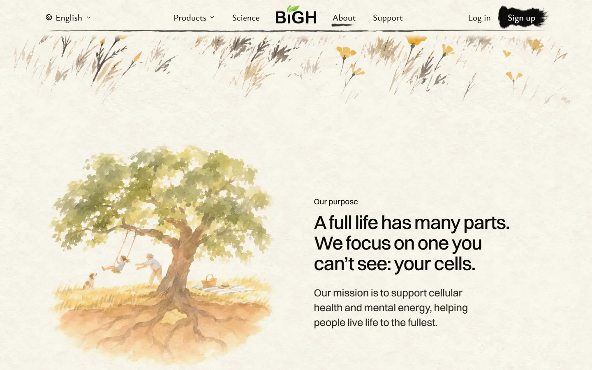<figcaption>Laptop, while scrolling: the light is on the gold for a moment</figcaption></figure>
      </div>
      <div class="stack narrow">
        <figure>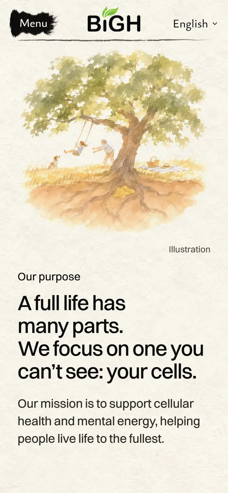<figcaption>Phone</figcaption></figure>
        <figure>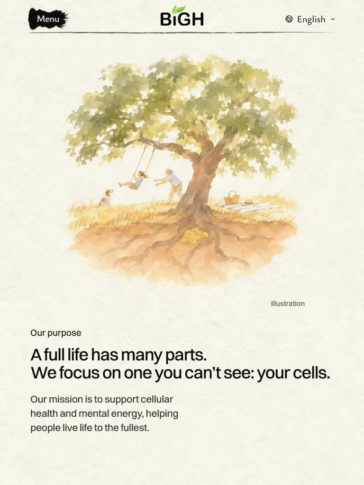<figcaption>Tablet</figcaption></figure>
      </div>
    </div>
  </section>

  <h2 class="section-title">Live today</h2>
  <section class="card" aria-labelledby="today">
    <h2 id="today">The dark oak</h2>
    <ul class="notes">
      <li>Black ink, right after the sunny poppy hills.</li>
      <li>Bare roots hanging in empty space.</li>
      <li>An empty swing. The words say "a full life", but nobody is in the picture.</li>
    </ul>
    <div class="shots">
      <figure>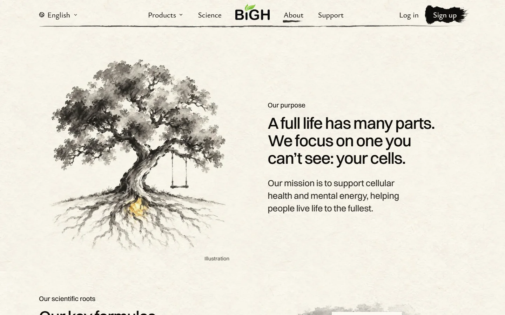<figcaption>Laptop, today</figcaption></figure>
      <figure class="phone">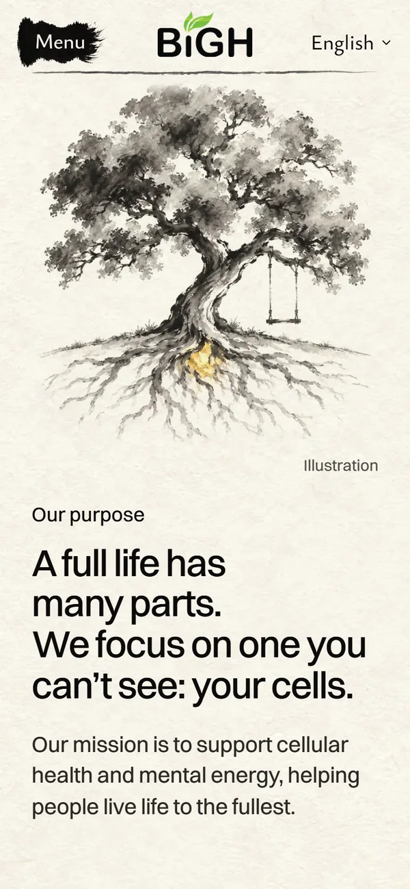<figcaption>Phone, today</figcaption></figure>
    </div>
  </section>

  <h2 class="section-title">The three ideas (mockups)</h2>
  <section class="card" aria-labelledby="a">
    <h2 id="a"><span class="tag">A</span> The oak on a sunny afternoon <span class="badge">You picked this</span></h2>
    <ul class="notes">
      <li>The same oak you picked in October, now in soft colour.</li>
      <li>The swing is in use: a child, a grandparent, a dog, a picnic.</li>
      <li>The roots sit inside warm earth. Among them, a patch of gold leaf: the part you can't see.</li>
    </ul>
    <p class="score"><b>My score: 8.5/10.</b> Warm, and the meaning is clear at a glance. Holding it back: the gold patch is small, and could look like buried treasure. "Made in California" lower down also has oaks. The people lean a little storybook.</p>
    <div class="shots">
      <div class="stack">
        <figure>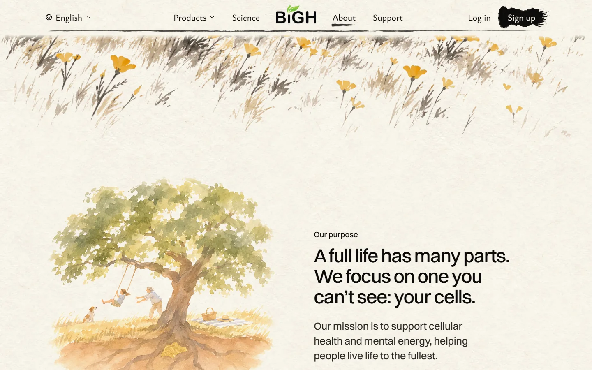<figcaption>Laptop, arriving from the poppies</figcaption></figure>
        <figure>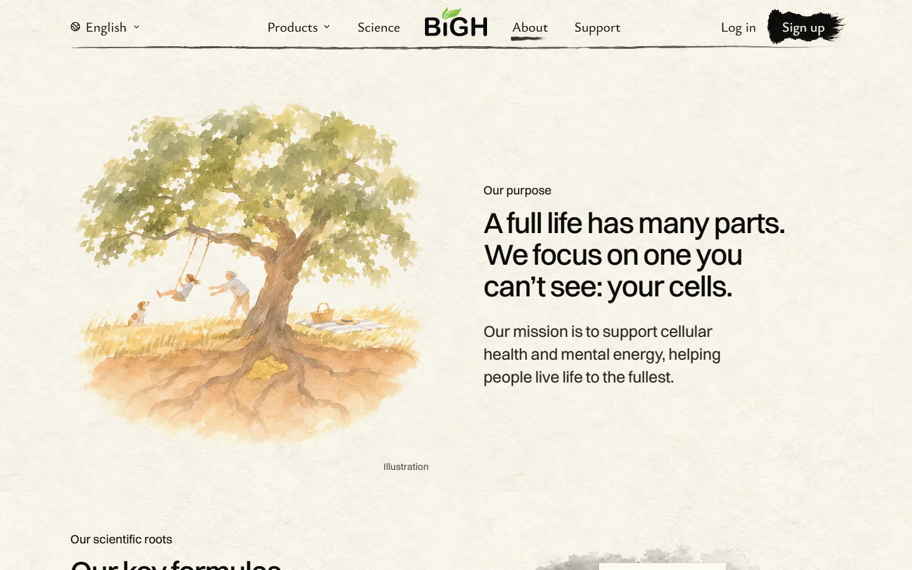<figcaption>Laptop</figcaption></figure>
      </div>
      <figure class="phone"><figcaption>Phone</figcaption></figure>
    </div>
  </section>

  <section class="card" aria-labelledby="b">
    <h2 id="b"><span class="tag">B</span> Monterey Bay, above and below</h2>
    <ul class="notes">
      <li>On top: a sea otter, a pelican, a paddle-boarder.</li>
      <li>Under the water: a kelp forest in gold leaf, holding up the life above it.</li>
      <li>The most gold of the three, and no tree. The page would go hills, sea, globe, valley, forest.</li>
    </ul>
    <p class="score"><b>My score: 8.5/10.</b> The prettiest picture, and the otter is hard not to like. Holding it back: the link to "your cells" is looser than roots under a tree. An otter and kelp could make someone think of an ocean charity, or that we sell seaweed.</p>
    <div class="shots">
      <figure>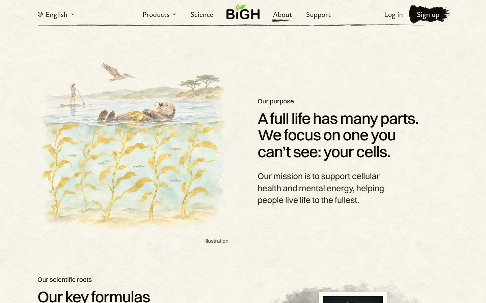<figcaption>Laptop</figcaption></figure>
      <figure class="phone">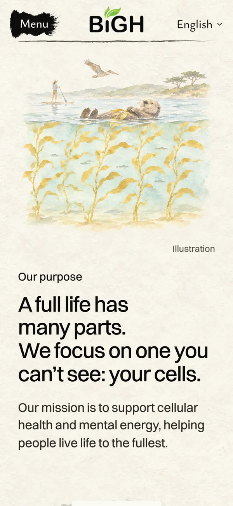<figcaption>Phone</figcaption></figure>
    </div>
  </section>

  <section class="card" aria-labelledby="c">
    <h2 id="c"><span class="tag">C</span> The cable car</h2>
    <ul class="notes">
      <li>A San Francisco cable car, a family on board, climbing a hill.</li>
      <li>Under the street, in gold leaf: the hidden cable that pulls it.</li>
      <li>The clearest "the part you can't see does the work" of the three.</li>
    </ul>
    <p class="score"><b>My score: 8/10.</b> Fun, and you get it at a glance. Holding it back: it's a city and a machine, and the rest of the page is nature. It's the busiest picture of the three. (My first try scored 7.5: the gold looked like a line painted on the road. This is the repaint, with the tunnel.)</p>
    <div class="shots">
      <figure>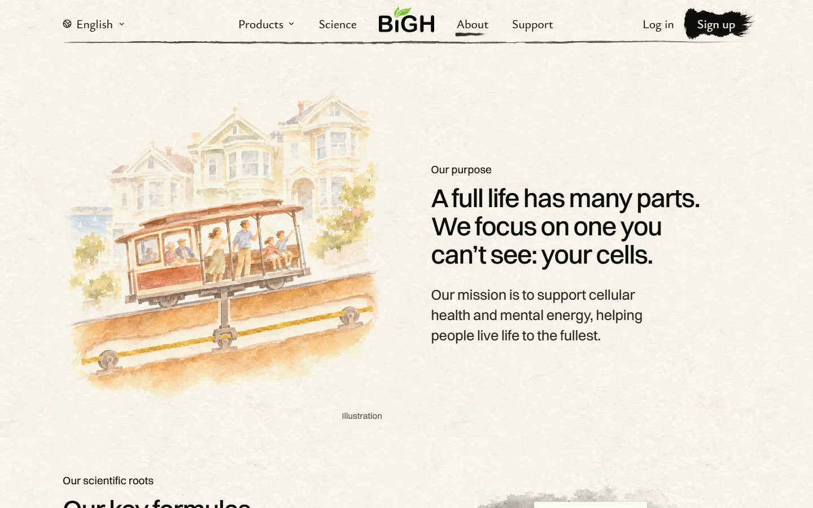<figcaption>Laptop</figcaption></figure>
      <figure class="phone">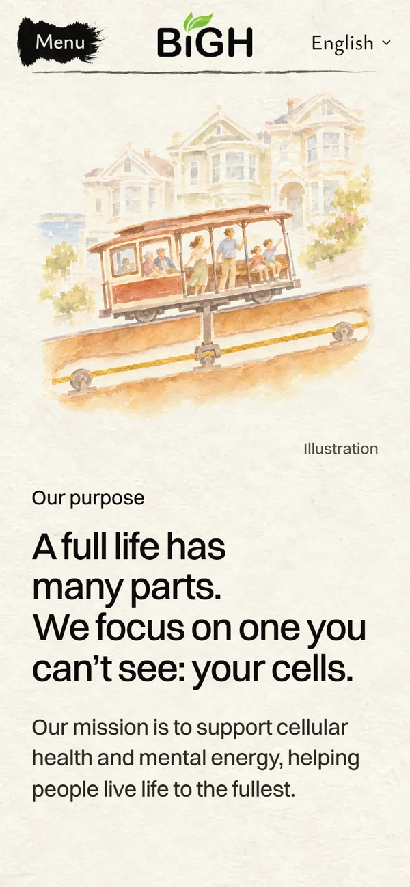<figcaption>Phone</figcaption></figure>
    </div>
  </section>

  <section class="ask" aria-labelledby="ask">
    <h2 id="ask">What I need from you</h2>
    <ol>
      <li>Look at the built oak at the top. Say yes to put it live, or tell me what to change.</li>
    </ol>
  </section>

  <footer>Nothing here is live. The built oak is on a draft copy of the site. Paintings are AI-made and marked "Illustration" on the page.</footer>
</main>
